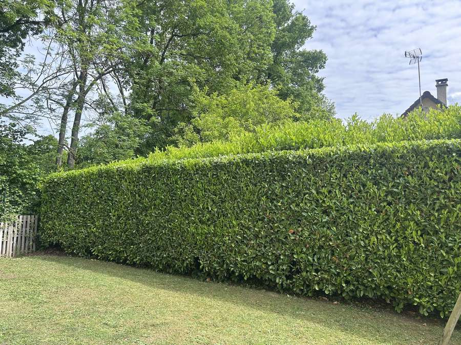
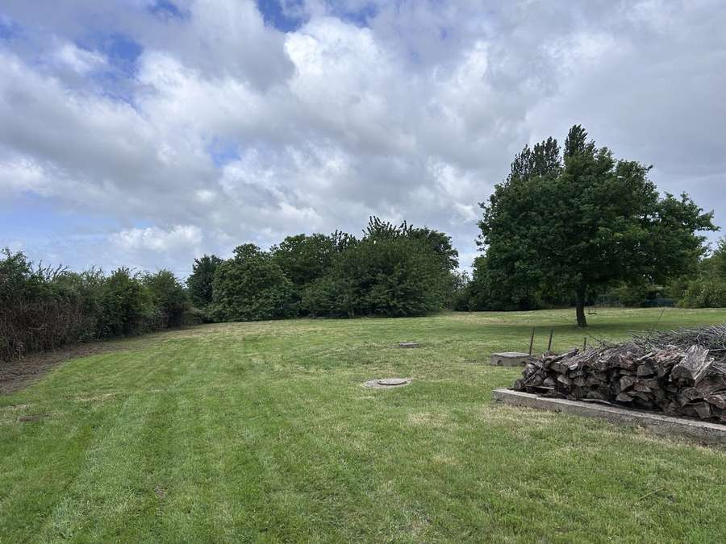
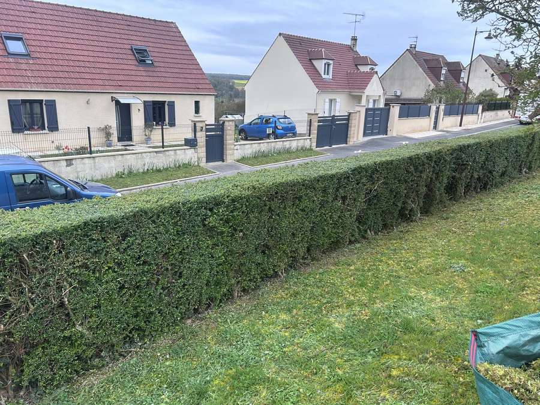
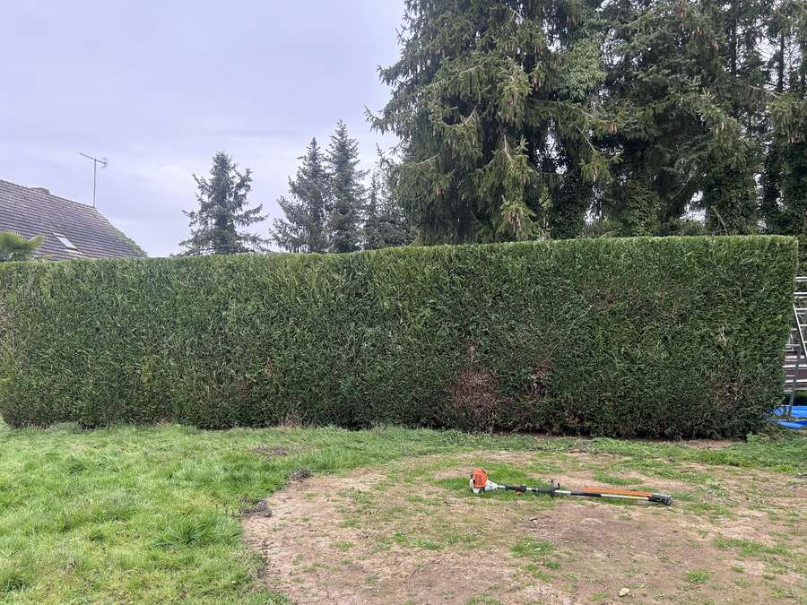
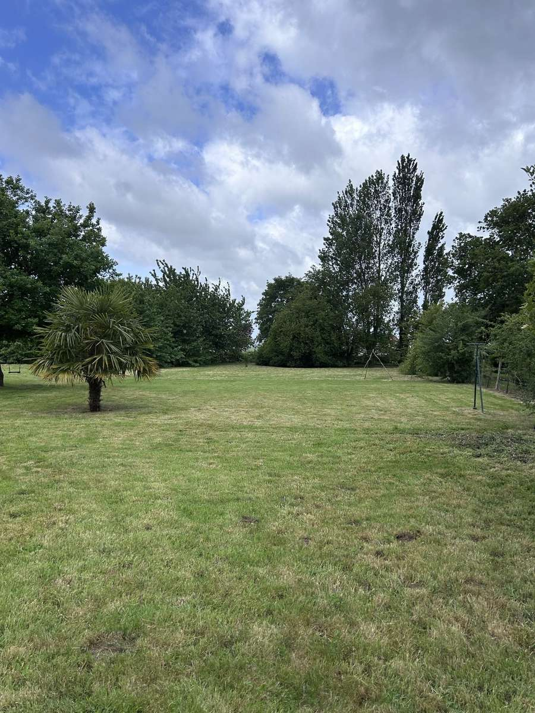

Taille de haie
Taille soignée pour des haies saines et harmonieuses, parfaitement dessinées toute l'année.
Paysagiste — Hébécourt (27)
Tom Legrand Jardin & Services — taille de haie, tonte, entretien extérieur et création de massifs à Gisors, Gournay-en-Bray, Chaumont-en-Vexin, Pontoise et dans tout le Vexin. Eure, Oise, Val-d'Oise, Seine-Maritime — sérieux, rigueur et passion du métier à votre service.
Des extérieurs entretenus, un cadre de vie embelli.
Nos prestations
Des services adaptés à chaque jardin, pour particuliers et professionnels dans le Vexin et alentours.
Taille soignée pour des haies saines et harmonieuses, parfaitement dessinées toute l'année.
Pelouse impeccable toute l'année — tonte régulière, finitions soignées et résultat net après chaque passage.
Entretien complet de vos espaces verts : un suivi régulier pour garder votre extérieur impeccable en toute saison.
Nettoyage efficace de vos terrains et zones en friche — remise en état complète, même sur les surfaces difficiles.
Plantation, création et entretien de massifs : désherbage, taille, paillage — des massifs en pleine santé toute l'année.
Évacuation des déchets verts dans le respect de l'environnement — nous repartons toujours avec un terrain propre.
Pourquoi nous choisir
Tom Legrand intervient à Gisors, Gournay-en-Bray, Chaumont-en-Vexin, Pontoise et dans toutes les communes du Vexin normand et français avec sérieux, ponctualité et des tarifs transparents.
Professionnel & ponctuel
Interventions dans les délais convenus, matériel professionnel et travail soigné jusqu'au moindre détail.
Devis gratuit & sans engagement
Évaluation personnalisée de votre projet, devis clair et détaillé, sans surprise sur la facture.
Prix raisonnables
Des tarifs compétitifs adaptés à votre budget, pour que chaque jardin puisse être entretenu avec soin.
Note parfaite
sur Google
Clients
satisfaits
Devis
gratuit
Départements
couverts
Nos réalisations
Chaque projet est unique. Voici un aperçu de nos interventions récentes dans l'Eure.





Avis clients
La satisfaction de nos clients est notre meilleure récompense.
"Personne professionnelle, ponctuelle et des prix raisonnables !"
Marion Vallier · via Google
Votre prochain avis apparaîtra ici…
Votre prochain avis apparaîtra ici…
Vous avez fait appel à Tom Legrand ? Laissez un avis !
Laisser un avis GoogleQuestions fréquentes
Les réponses de Tom Legrand, paysagiste à Hébécourt (27)
Le tarif dépend de la longueur, de la hauteur et de l'essence de votre haie. Tom Legrand propose un devis gratuit et sans engagement pour chaque intervention. Contactez-nous au 06 24 79 78 72 ou via le formulaire ci-dessous pour obtenir votre estimation personnalisée.
En Normandie, les meilleures périodes sont fin août à octobre (après la nidification) et mars (avant la montée de sève). Entre le 15 avril et le 15 août, la taille est déconseillée pour préserver la faune. Pour les haies de laurier ou thuya, une taille légère en mars complète la taille principale d'automne.
Tom Legrand intervient dans 4 départements : l'Eure (27), l'Oise (60), le Val-d'Oise (95) et la Seine-Maritime (76). Les villes principales couvertes sont Gisors, Gournay-en-Bray, Chaumont-en-Vexin et Pontoise, ainsi que toutes les communes du Vexin normand et français. Devis gratuit, déplacement inclus.
Oui, systématiquement. Chaque intervention comprend la collecte et l'évacuation des déchets verts. Nous repartons avec un chantier propre — vous n'avez rien à gérer.
Contact
Réponse rapide, devis gratuit et sans engagement. Interventions à Hébécourt, Gisors, Étrépagny, Vernon et alentours.
Téléphone
Adresse
27150 Hébécourt
Horaires d'ouverture
Zone d'intervention
Hébécourt, Gisors, Étrépagny, Vernon et toutes les communes de l'Eure (27)